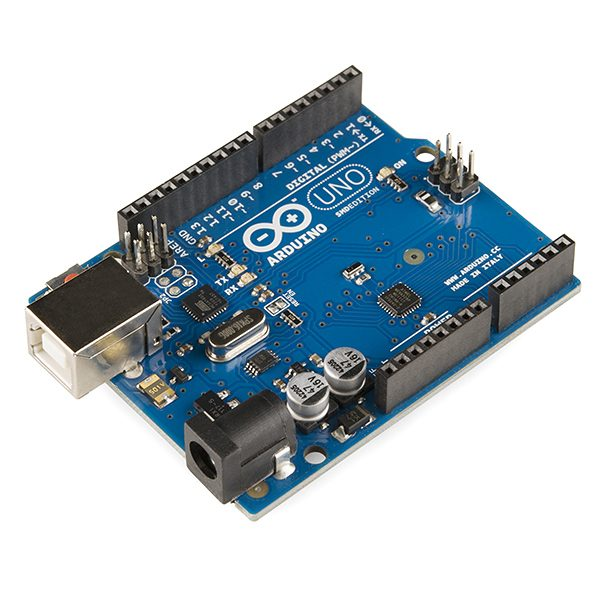
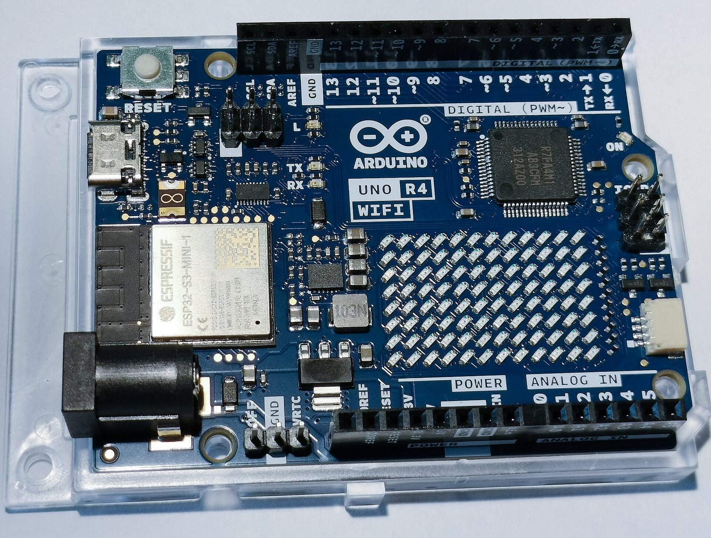
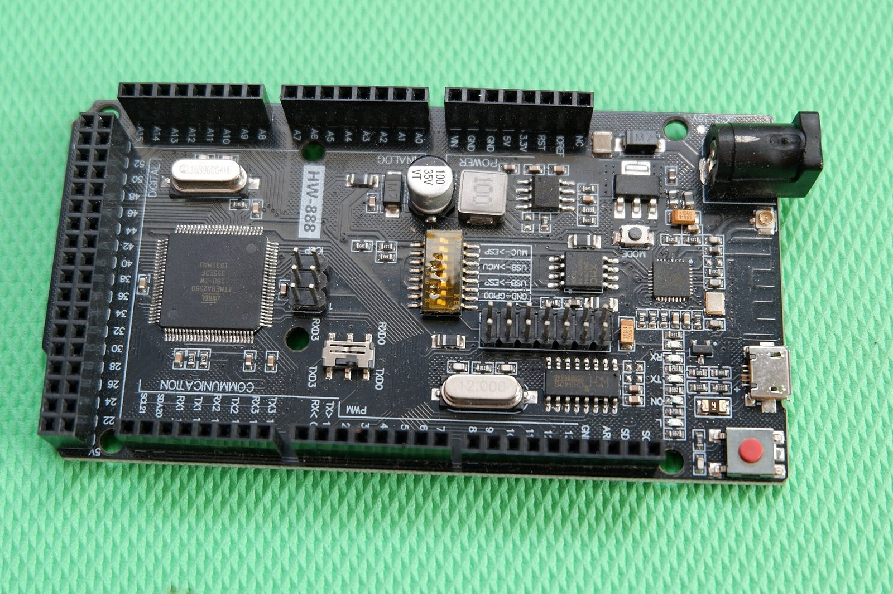
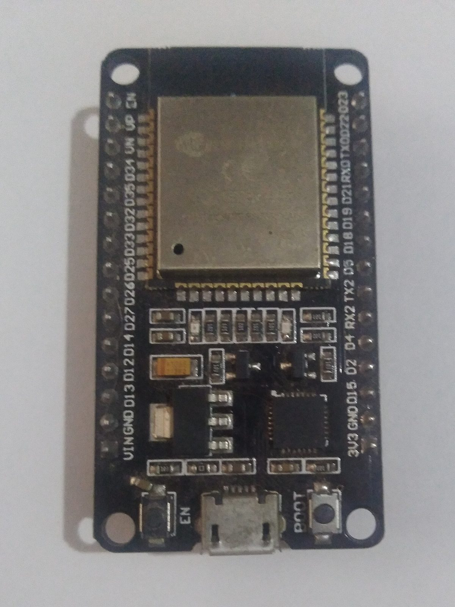
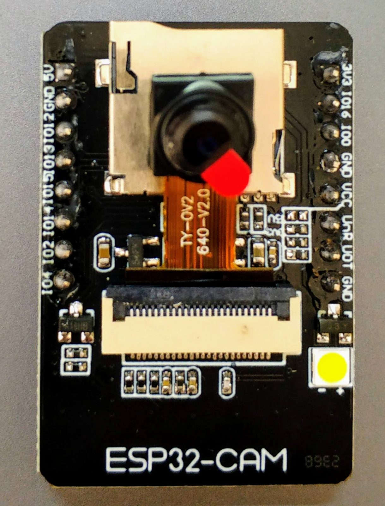
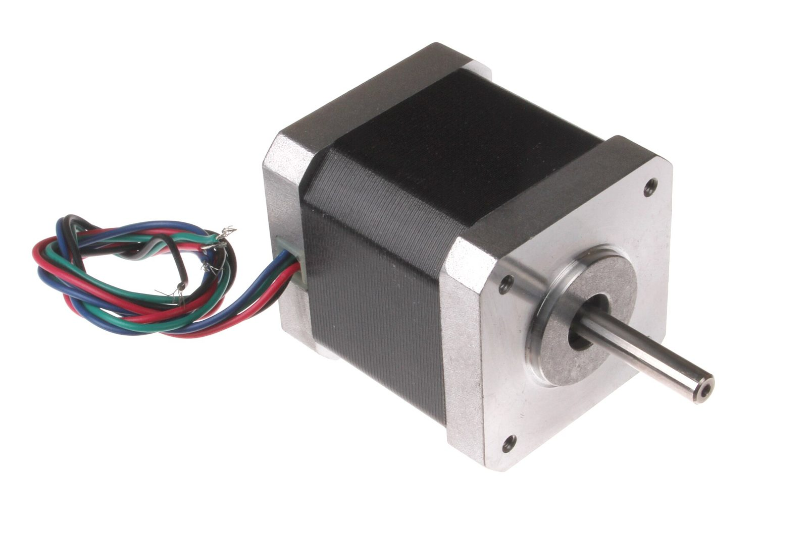
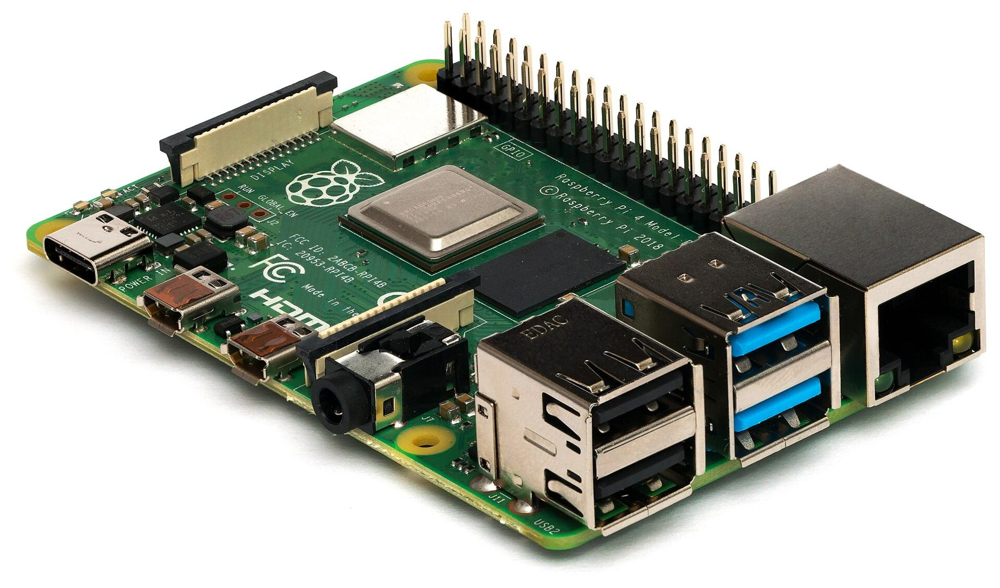
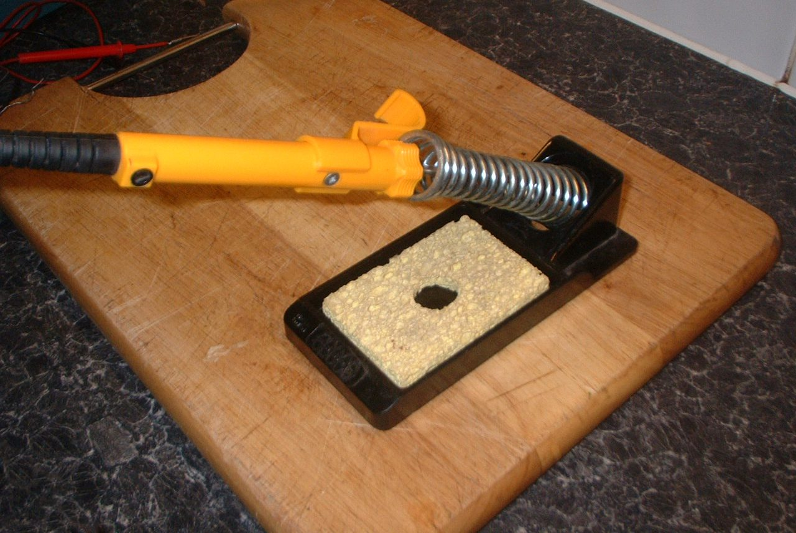

ACM @ RCC
Fall 2026 ·
What can we build with what we have?
The parts we own, five projects they can start, and parts to buy to take them further. Pick the one you'd work on in spring.
Boards we have

6 UNO R3 kitsOne per lab station, with all the kit parts
Photo: SparkFun Electronics, CC BY 2.0
3 UNO R4 WiFiAn UNO with Wi-Fi built in
Photo: Lomrjyo, CC BY-SA 4.0
2 Mega 2560Lots more pins than the UNO
Photo: Goga504, CC BY-SA 4.0
6 ESP-32Wi-Fi, so a build can put data on a web page
Photo: Edwiyanto, CC BY-SA 4.0


_front.jpg){kind=link}

What's in each of the 6 kits
- Sensors
Distance (ultrasonic), motion, temperature and humidity, light, sound, water level, a gyro, an RFID card reader
- Motion
A servo, a stepper motor and driver, a small DC motor, a relay
- Screens and sound
A 2-line text screen, number displays, an 8 by 8 LED grid, buzzers
- Inputs
Buttons, a keypad, a joystick, a turn knob, an IR remote, a real-time clock
Extras beyond the kits
- 20 servos
10 SG90 and 10 metal-gear MG90S
- 5 stepper sets
28BYJ-48 motor with a ULN2003 driver
- 1 L298N motor driver
Runs two DC motors forward and back
- 10 breadboards
Plus 3 jumper wire kits
Project 1 of 5 · grows from the Oct 29 gate
Smart parking garage
- Start: count cars in and outUltrasonic sensor, servo gate, text screen
- Then: a sensor in every spotA Mega 2560 for the extra pins
- Then: open spots on a web pageAn ESP-32 sends the count over Wi-Fi
- What you learnState machines, Wi-Fi, a server and database
Project 2 of 5 · the lab repo already has the scheduler
Elevator on stepper motors
- Start: one car between floorsStepper, a button per floor, floor display
- Then: a scheduling algorithmThe lab repo's elevator challenge
- Then: two cars, and a raceLog every trip, compare wait times
- What you learnMotor control, interrupts, scheduling
Project 3 of 5 · needs a chassis kit
Robot car
- Start: drive it with the IR remoteL298N driver, 2 motors, IR receiver
- Then: stop before it hits a wallUltrasonic sensor on a sweeping servo
- Then: drive straight, turn exact anglesThe gyro and a steering feedback loop
- What you learnMotor drivers, battery power, feedback control
Project 4 of 5 · uses the 6 ESP-32s
Sensor stations
- Start: one station on a deskTemperature, humidity, light, sound
- Then: six stations, one per ESP-32Each sends readings over Wi-Fi
- Then: a live page with chartsA server stores every reading
- What you learnCalibration, databases, charts, sleep modes
Project 5 of 5 · uses the kit card readers
RFID check-in for meetings
- Start: tap a card, see a nameRFID reader, text screen, buzzer
- Then: a lock boxKeypad code, servo latch, time stamp
- Then: check-ins on a web pageAn ESP-32 sends each tap to a server
- What you learnWiring a reader, storing IDs safely, logins
Parts to buy

ESP32-CAMA camera on a Wi-Fi board
Photo: Nowforever, CC BY-SA 4.0
NEMA 17 steppers and driversStrong, exact motion that lifts real weight
Photo: oomlout, CC BY-SA 2.0
Raspberry PiA small computer to run a web server and database
Photo: Laserlicht, CC BY-SA 4.0
Soldering irons and perfboardMake a breadboard build last
Photo: Bgrimer, CC BY-SA 3.0


More parts to buy
- Robot car chassis kits
Frame, 2 motors, and wheels. For the robot car
- 18650 batteries and a charger
Run a build without a laptop cable. For the car and the sensor stations
- Laser distance sensors
Smaller and more exact than ultrasonic. One per parking spot
- Small OLED screens
Draw text and graphics. For the sensor stations and check-in
Hands up
Which project would you work on in spring?
Garage, elevator, robot car, sensor stations, or check-in. Or tell us one we missed.
What's next
- No meeting, Thanksgiving week
- Plan the top project and its parts list
- Last meeting. We lock the plan for spring
- Spring classes start
Before you go
Thanks for coming
No meeting next week. See you December 3.
Thursdays, to , BLCIS A-210
ACM @ RCC
Updated